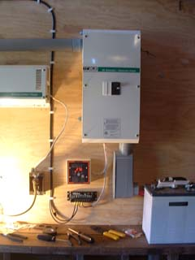
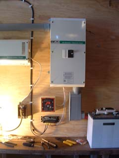
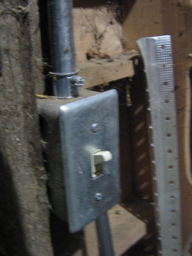

|
August 2005
The system was incomplete as installed. The temporary trouble-lite setup was intended to last only until the electrician ran the conduit and installed light fixtures. The batteries were supposed to have a box constructed to protect them from the hay and dust in the barn. The system as completed in August of 2005 is pictured below.
  
Two Years of Zero Maintenance
I left the initial installation in a hurry and left a few instructions for the caretaker (my Dad). It was agreed that he would build a battery box for the batteries. He intended on a nice plexi-glass faced enclosure over the entire system.
In early 2006, the very same electrician who had given me recommendations on how to mount the inverter and other hardware was hired to install several lights and conduit throughout the barn. Brian Wyatt installed conduit boxes to serve a flood light and four other lights; one above each of three stalls (left) and one for the main entry area (right).
Instead of installing an energy-saving flood light, Brian installed a dual 150W motion and photo sensitive flood light. I learned of this when my Dad called me to let me know that the system wasn't working. Clearly, the two 150W bulbs had drained the batteries. I instructed him not to use the flood light and to tell Brian to replace it with something energy efficient. Brian had left with the intent to return later and finish the installation. The system still needed fixtures for all of the lights, an additional conduit box run for the storage loft, and an AC disconnect setup.
When I arrived in January 2007, Brian had still not returned. In the photo above, you can see the state of the system. The conduit Brian ran is the silver 3/4" one. The conduit is attached to a black extension cord with wire nuts and the cord is plugged into my temporary AC outlet. You can also see a sheet of plywood leaned against the wall to "protect" the batteries. If you look closely, you can see cobwebs covering everything. What you cannot see is dust and thick grime covering the tops of all the batteries and boxes. The batteries had also not been watered or maintained in any way. The trouble light setup had been in use the whole time.
Upgrade
Fortunately, the system was still reparable. My first order of business was to clean up. I thoroughly dirtied six shop rags getting all the nastiness off of the batteries. I also used a gallon and a half of distilled water flooding the cells. I spent another twenty minutes cleaning acid build-up off of the batteries with a wire brush. I recommend wearing a face mask for this. I did not and had to take a ten minute break to clear my lungs.
Fixtures
After watering the batteries, my Dad and I visited the nearest the Solar Living Center and Friedman Brothers. We used plastic fixtures and 20W lights (pictured below) for each of the indoor conduit boxes. We found a nice outdoor 30W florescent flood light and used a single socket fixture.
Switches
After installing fixtures, I rewired the all-weather entry way switch so that the outer (left) switch controlled the flood light and the inner switch controlled the entry way light (left photo). On the other side of the wall from the entry light, just inside the middle stall door on the left, is a switch that turns on all three stall lights (right photo).

AC Disconnect
The AC Disconnect (below left) has room for two circuits. We used only one 15A breaker. Our inverter can handle 30A so we could add an additional circuit later if we wanted to. I first removed the old setup disconnecting the romex from the AC side of the inverter and removing the 3/4" conduit (below right) because it was in the way of an ideal spot for the AC Disconnect.
I moved the AC outlet down a few inches to make room for the AC Disconnect. With some scrap conduit and conduit nuts from the piece I had removed, I connected the AC outlet to the AC Disconnect. We did not have more conduit available so I just left the wires bare. However, I did add the protective plate on the AC side of the inverter as can be seen in the photo on the right. The previous exposed version is visible in the photo just below it.

Flex Conduit
Flex conduit was the fun part. I unwired the AC Disconnect and added flex conduit where there used to be bare wires. The nicest thing about working with flex conduit is cutting it to length. You simply twist it in reverse and it pops apart so you can cut it with wire cutters. Bending it? No problem! It's flex conduit. I think it looks pretty cool too.
Battery Box
The battery box design went through several stages ending in a design that allowed us to build the box without another trip to the store. We used plywood to cover the two ends, front, and top. I did not bring my large wood drill bits with me and my Dad's were at his office so my Dad got some exercise using his old manual drill and auger bit. We hinged the top of the box on the wall for easy access to the batteries. The weird stain on the front board is just water from the plywood's previous existence.
Completion
The system is now officially complete. It has a battery box protecting the batteries, the AC Disconnect is installed and fully functional. There is an AC outlet for tools or other needs. All the wiring is in conduit. Even with all five lights running, we draw only 103W. The system could run without charging for four days solid before draining the batteries to dangerously low levels.
Following are some photos of the system in operation.
Photos from the storage loft above the main entry area looking down on the three stalls. The middle and left stall (left) and the right stall (right). You can see the pony Scooby eating on the right.

Photos of the stalls from below. Two photos spliced together of the left stall which is used for storage (left) and a view looking up from the middle stall where the inverter is installed (top right). The system in operation under it's own power (bottom right). The shadows are due to stored wood which will soon be moved to accommodate the lighting.
The series of three photos below show the view from the front of the barn with no lights on (top), just the entry area light on (middle) and the front flood, entry light, and all stall lights on (bottom). Poppy is eating dinner at the time. In the past, the trouble light was used to get the feed but there was never any light in the entry way or out front.
Future Additions
My Dad intends to add conduit to install a light for the storage loft. That's for next time.
| 


{kind=link}
{kind=link}
{kind=link}
{kind=link}
{kind=link}
{kind=link}
{kind=link}
{kind=link}
{kind=link}
{kind=link}
{kind=link}
{kind=link}
{kind=link}
{kind=link}
{kind=link}
{kind=link}
{kind=link}
{kind=link}
{kind=link}
{kind=link}
{kind=link}
{kind=link}
{kind=link}